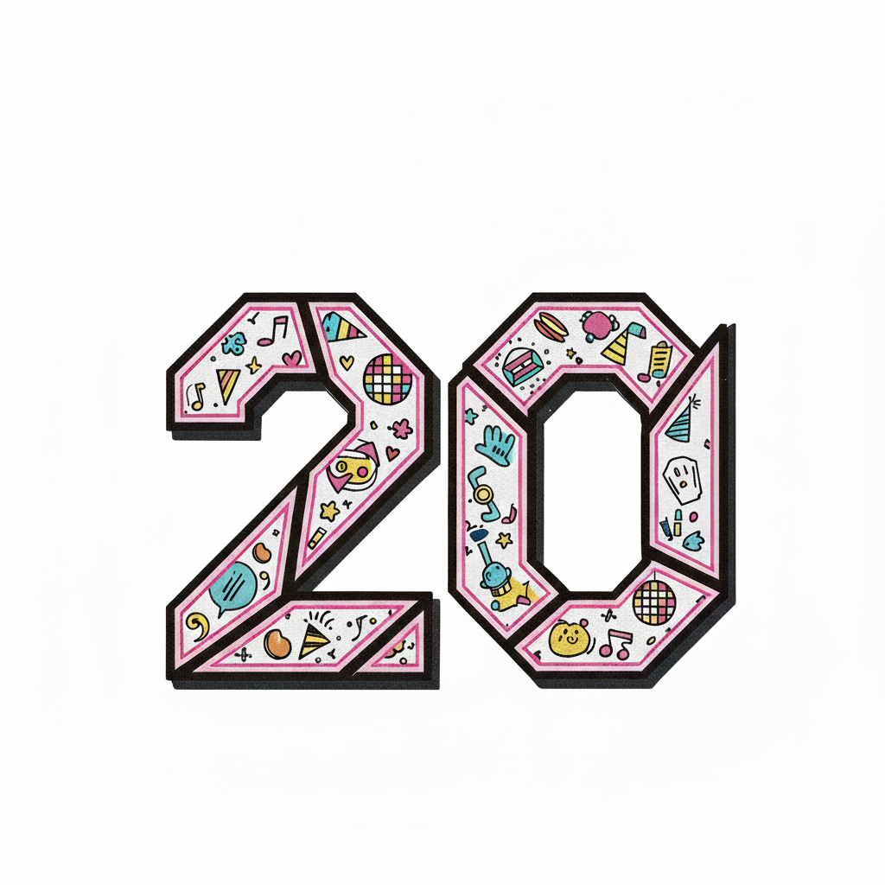
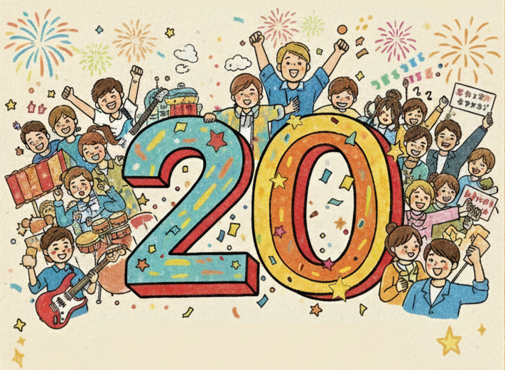

🎉 20祭（Nijyussai） 🎊
～20歳を祝う会 前日祭～
僕らまた
それぞれの道をさ
歩み始めたのさ
その先にある交差点でまた会えたら
その時は二人で
長い長い話を
夜が明けるまで語り明かしたいね
それぞれの道をさ
歩み始めたのさ
その先にある交差点でまた会えたら
その時は二人で
長い長い話を
夜が明けるまで語り明かしたいね

主旨
20祭（Nijyussai）は、今年度20歳になる方を招待し、懐かしい仲間やゲストとの再会の機会を作り、以って南山田への郷土愛を持って頂くことを主旨としています
日程
令和8年1月11日（日）
13時～2時間程度
場所
南山田小学校
@体育館
対象
今年度20歳になる南山田小学校卒の方
（途中転入転出された方も対象）
✨ 内容 ✨
懐かしい仲間との一生モノの再会
小学校の体育館にて、テーブル＆チェアにて、気軽に参加できる茶話会形式
パナスタのベンチでは、人も多くて、なかなか集まってゆっくり話しにくいです
思い出の空間（EmotionalArchive）
体育館を思い出の空間に仕上げます
📸 写真撮影OK！
👔 衣装も自由です
💭 当時を振り返りながら、さらなる思い出をたくさん作って下さい
特別ゲストが多数来場！
Ｕ・Ｋさん
Ｆ・Ｈさん
Ｋ・Ｔさん
Ｗ・Ｍさん
etc...
そのほか、現在特別ゲストさんを続々追加中！
特別ゲストによるライブショー！
来てからのおたのしみ！！
アクセス
南山田小学校
皆さんが通った懐かしい母校で開催します。
〒565-0814 大阪府吹田市千里丘西９−１